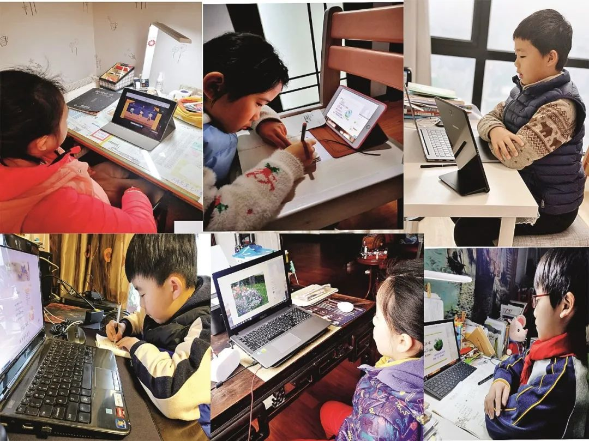

线下教育按下“暂停键”
原文链接 备份链接 《创新经济战疫指南》，是燃财经在新型肺炎疫情期间推出的特别栏目，关注创新经济企业遇到的新难题、商讨应该采取的新对策，希望能够帮助中小企业一起战胜挑战、把握机会。本文是第4期。查看前3篇请点击《哪些行业正在逆势爆 …

在线教育行业突然涌入海量的师生
将深刻影响中国教育未来

2月11日，山东省滨州市博兴县第三中学的工作人员利用电脑端实时监控“网络直播教学”进程，随时提供直播技术支持。2020年春季学期开学延期，博兴县第三中学利用网络直播设备搭建“网络直播教室”，组织教室按照课程轮值在“网络直播教室”当上“教学主播”。图/中新
在线教育的“诺曼底登陆”
本刊记者/苏杰德
*发于2020.3.9总第938期《中国新闻周刊》*
进入3月，很多学校还是看不到开学的希望。
疫情之下，教育是受波及面最广的行业之一。开学时间已经多次被延期，仍然没有明确时间表。教育部在1月27日发布通知，宣布春季学期延期开学。2月28日，教育部再次印发通知，要求“全国大中小学、幼儿园等开学时间原则上继续推迟。”
这意味着，全国超过3亿师生，无法返校。根据教育部2019年7月公布的《全国教育事业发展统计公报》，2018年全国各级各类学历教育在校生2.76亿人，全国各级各类学校专任教师1672.85万人，其中义务教育阶段在校生1.5亿人。
为了应对延期开学，教育部给出的解决方案是：利用网络平台，停课不停学。“停课不停学”的通知直接引爆了在线教育的热潮，全国各地数以亿计的师生涌入互联网课堂。一千多万老师摇身一变，成为网络主播，两亿多学生成为“粉丝”。
“这是一次大规模的教育实验，直接把在线教育往前推进了一大步。” 全国政协常委、副秘书长、民进中央副主席朱永新告诉《中国新闻周刊》。
在线教育可能给中国教育带来一次“诺曼底登陆”，在传统教育之外开辟第二战场。
“抢滩”网课
2月27日，湖北省襄阳市高二学生韩金宇坐在家中书桌前，通过在线教育工具钉钉观看老师的讲课，聊天框时不时弹出同学提出的问题，网络另一端的老师实时进行解答。这样的学习方式，他已经进行了两周，离高考还有一年多时间，他已经进入“倒计时”。
对于韩金宇来说，这个寒假格外漫长。以往这个时候，他应该坐在教室里听老师讲课，下课后回寝室和室友聊天打闹。然而，新冠肺炎疫情席卷全国，为了防控疫情，人们不得不待在家中抗“疫”，正常生活节奏也被打乱。
“这时候，在线教育相对于线下机构的优势和便捷性便体现了出来，很多家长将目光转向了在线教育。”校外培训机构VIPKID少儿研究院执行院长李国训告诉《中国新闻周刊》。
韩金宇用的钉钉，是此次在线教育App人气最高的软件之一。钉钉原本是阿里巴巴旗下的一款办公软件，疫情期间，紧急上线了“在家上课”功能。钉钉教育线负责人方永新（花名大炮）告诉《中国新闻周刊》，2月中旬，已经有5000多万学生在用钉钉在线上课。相比之下，从2015年发布到2019年上半年，钉钉用了五年时间才达到2亿用户的规模。
钉钉“在家上课”计划非常强大，覆盖在线授课、在线提交批改作业、在线考试等应用场景，而且免费让全国大中小学使用。不过，这些“强大的功能”遭到了很多中小学生的抗议，学生们普遍反映假期休息时间被霸占、被要求强制下载注册、钉钉侵入个人隐私太多。学生们疯狂在各大App应用市场打出1星“好评”，几乎在一夜之间，钉钉在应用商店的评分就从4.9跌到了1.3。对于被打低分，方永新表示很理解，他女儿甚至还写了很多针对钉钉的建议，“仔细看了很多小朋友的帖子，写得非常有才。”
突如其来的疫情，为整个在线教育按下了快进键。不仅是阿里巴巴，其他互联网巨头也冲入教育市场，争夺庞大的流量。字节跳动联合50家教育机构为全国中小学生提供免费上课服务；爱奇艺携手各家网校打造免费直播课名师团；腾讯视频免费提供2万分钟课程。
创立8年，国内K-12在线教育领域首个独角兽公司猿辅导在线教育，针对这次疫情，动员了356名主讲老师、457名助教以及151名技术人员，从2月3日全面开始大规模的免费直播课。2月15日猿辅导在线教育旗下的猿题库App启动“全国百万人在线大模考”，参与中学生达到创记录的123万。
老牌教育培训机构也推出了免费的大班直播和录播课。好未来、新东方等机构通过捐赠课程、服务，设立教育基金等形式争夺流量。新东方董事长俞敏洪还订购了手机支架、灯光等直播设备，在快手平台开启个人直播首秀，化身“网红”给学生和家长讲课。
俞敏洪在接受媒体采访时透露，在疫情发生后的一周之内，新东方将87所分校、子公司，接近200万人次学生全部转移到了线上。这个过程中，服务器扩容了好几次，旗下三个平台总承载量1000万人次，整体运行平稳，最终把退课率控制在了3％左右。
东方优播是新东方旗下在线教育公司，主营中小学在线小班互动直播课程。东方优播CEO朱宇告诉《中国新闻周刊》：“这次的流量效应，远远超过了几大在线教育公司去年暑假耗资几十亿元打出来的效果。如果用数字估算的话，相当于替互联网教育机构省了近千亿元的推广费。”
资本市场上，在线教育也成为“宠儿”。刚在美股上市不久的网易有道于2月7日、10日连续暴涨，短短2个交易日涨幅超80％，其他在线教育的中概股股价也持续上扬。

2月10日，武汉市水果湖二小的学生通过直播云系统上课。当日起，武汉中小学（中职学校）按照教学计划，开展在线教学。摄影/湖北日报 田悦
技术“攻坚战”
2月2日上午10点，天津华英学校正在进行寒假班第3天的课程，直播软件突然出现了大规模卡顿，持续了大概40分钟。“第一节课还没下课，下一节课准备开始。这个时候大家争抢资源，出现了上课老师卡顿，想提前开课的老师进不去的情况。”华英学校副校长刘树枨告诉《中国新闻周刊》，同一时间很多直播平台也出现了不同程度的问题。
当数以亿计的师生像洪水一样涌入直播平台，很容易就冲垮了大坝。“疫情事态超出我们的想象，仅仅大年三十近3000家机构在后台注册，如果不是我们注册流程非常复杂，一天的注册量会在几万家。”翼鸥教育在官方微信公号上详细讲述了这段特殊时期的经历。
翼鸥教育是一家为教育机构提供在线教室服务的公司。疫情期间，后台流量就开始暴增，最高时候一天之内登录的学生人次超过 160 万，同时在线的学生人数超过了 35 万，而在疫情到来之前，平台在最高峰的时候也不过是 3 万人。除了线下机构，许多公立学校也陆续找上门来，包括北大、北师大、中科大、人大附中、北京四中、101 中学等。
为此紧急应对这些客户，翼鸥教育想尽办法把系统扩容。但由于扩容速度过快，系统稳定性急剧下降，“老用户骂我们贪财贪利签约太多，系统不太稳定，服务水平一落千丈。”
在线教育行业，中小机构多使用类似翼鸥教育提供的第三方在线教育或直播系统。突然暴涨的用户需求，让这些第三方系统难以招架。俞敏洪也曾表示：“要是新东方真的把100多万学员直接搬到第三方系统上，它们的系统也根本承载不了，因为它们还要承载外面很多机构的业务。这就等于我们所有学员在家里没有平台上课，新东方可能也就倒闭了。”
钉钉怎么解决高达5000万的并发人次？方永新介绍，依托阿里云的全力支持，最初流量洪峰到来时，钉钉两个小时扩容了1万多台服务器。在过去一段时间里，阿里云总共为钉钉扩容了10万台云服务器，“如果没有这些机器支持，能够同时满足1000万人上课就不错了。”
“如果没有云计算的话，在线教育公司绝对承担不了爆发的业务量。”阿里云智能在线教育行业架构师江南告诉《中国新闻周刊》，他经常遇到的最紧迫情况是，有些客户要求一天之内就要准备好第二天的资源，还不只是单纯的扩容需求。当很多客户同时提出来的时候，也给阿里云带来很大压力。
从2月初到现在，钉钉每两三天经历一次产品迭代，从直播卡顿、连麦效果、语音质量上都在不断优化。方永新介绍：“一开始发现卡顿问题，以为是扩容不够，阿里云连续做了多次大规模扩容，但还是有用户反馈使用不畅。后来，我们分析发现，80％~90％用户是差异化网络环境造成的，也有电脑、手机等硬件设备的问题。” 方永新举例说，语音通话的时候出现“抖音”问题，这可能是由于接听双方网络类型、网络带宽不同等原因造成，这些“物理原因”很难立刻就能优化好。
不是每家机构都可以像钉钉一样获得这么大力度的支持。“我们必须限流，才能保证系统的稳定”，翼鸥教育称：计划“建设全新的、超大规模通信网络，以容纳上千万的学生同时上课，但是这需要一段较长时间。”
这些技术体验问题也引起了教育部的重视。教育部相关负责人在接受采访时表示：确保网络正常运行是保障网上教学的基本前提。由于我国中小学生人数众多，各地网络基础条件差异较大，在延期开学的同一时间段内集中上网学习，出现了网络拥堵。各地要加大与工信部门及网络运行企业的协调力度，积极争取支持。要因地制宜、从实际出发，根据当地网络情况、服务能力、学生分布等做好分析研判，有针对性地指导“错峰”登录上网。
全民网课模式下，一些新的问题浮出水面。据中国网消息，2月29日上午，河南邓州初三年级的14岁女孩李某敏因家中贫困，没有钱买手机按时跟听学校网课，大量吞服母亲治疗精神疾病的药物。报道称：“因受疫情影响，年后，李家姐弟三人只能在家上网课。父亲李汉党虽然东挪西凑让邻居帮忙在网上买了一部智能手机，但因为只有一部手机，姐姐和弟弟也要用，李某敏能用的时间没多少，因此落下了许多功课，同时还要面对老师和同学们的质疑，一时想不开，选择吞食母亲的治疗药物。”
不少农村和偏远山区的孩子，有可能因为家庭无力购买智能手机、平板电脑或手机流量，而被挡在“网络课堂”之外，造成特殊时期的失学困境。腾讯《深网》在一篇题为《偏远山区里的网课：全家把流量省给孩子，有的边放羊边学习》的文章中报道：在一些没有网络覆盖的地区，“蹭网络”、找信号成了这个“超长寒假”不少农村和偏远山区孩子每天学习的“必修课”之一。一些孩子为了找信号、蹭网络，甚至需要步行几百米甚至是几公里到村支部或者悬崖边上网课。
如何避免学生因为贫困而被阻挡在网课之外，为在线教育行业和教育部门提出了新的课题。

线下机构的生存危机
1月20日，华英学校负责人李忠听到钟南山院士关于新冠肺炎“人传人”的表态后，立刻感受到了事情的严重性，经历过非典时期的他对于疫情特别敏感。
华英学校是一家总部在天津的线下培训机构，成立超过三十年，学员超过两万人。“我在微信群里说，培训机构很可能要停课，其他管理层不以为然，都觉得离天津还挺远。”李忠对2003年非典时期，很多培训机构面临的生死危机印象深刻，“好多培训机构因为退费而关门了”。
李忠回忆，为了应对非典停课，他临时买了几台光盘刻录机，把老师的课程录播成光碟，发放给学员。刻录机昼夜不停运作，坏了一台立刻再去买一台，最后刻制了近15000张光盘。出乎李忠意料的是，绝大多数家长没有退费，而是转成华英夏季课学费，非典疫情结束后，华英的报名学生数量出现暴增。
2020年是华英学校加入精锐教育集团后，业绩对赌的最后一年。因为新冠肺炎疫情，生存危机、业绩压力又一次摆在了李忠的面前。
“全国各地陆续要求线下教培机构停课，对于线下教培机构的负责人而言，是进一步的观望，还是积极行动起来，从线下转移到线上，这是一个抉择。”东方优播CEO朱宇说，一些线下机构担心，如果没有转移好，反而会引起学员的流失。但是不转移的话，生源很快会被线上机构抢走，线下机构由于停课没有收入，短期内就会出现现金流断裂，公司倒闭。
“不管怎样，转变总比坐以待毙要好，否则接近三十年的新东方，将会山崩地裂。”俞敏洪表示，这次疫情让上百万寒假班学生无法上课，如果这些课程全部停课退费，七八万老师及员工的生计立刻成问题，新东方只能关门大吉。
相比于新东方这类头部培训机构来说，中小机构面临的挑战严峻得多。中国民办教育协会培训教育专业委员会自2月7日至14日，面向全国31个省区市的校外培训机构进行调研发现，超过90％的机构表示存在很大的影响，目前机构经营存在部分困难或严重困难。受冲击最大的线下培训学校，有49.42％的机构预计收入同比减少五成以上。
“目前营收几乎没有，但是工资还在发，房租也得交。说白了，一年赚的钱，基本上都赔进去了。现在唯一能做的就是扛，没有其他办法。”河南郑州的京联数学校长冯浩杰告诉《中国新闻周刊》，如果疫情一直持续，校外培训旺季暑假招生受到影响的话，他的学校将面临巨大危机。
但对线下培训机构来说，转型线上，面临的不只是成本问题。雷雨资本专注教育领域风投，董事总经理朱国平告诉《中国新闻周刊》：“在线教育有其自身的业务特性和竞争挑战，不是简单的从线下转向线上，就可以获得红利，实际上是完全进入另一个竞争领域。相当一部分习惯于线下的机构是很难适应的，这也就带来了培训机构的洗牌格局。”
事实上，即使是猿辅导这样从创立开始就立足在线教育的公司，在商业模式探索上也经历了一个持续的深耕过程。猿辅导联合创始人帅科对《中国新闻周刊》表示：“一开始，‘只要能为用户持续提供价值的产品就有生命力’的想法很坚定，在做的过程中，我们逐步对‘教育在线化’变得更坚定。”
很多业内人士都预测，尽管面临生源的暴涨，但在线教育行业将加速洗牌。疫情前十年，众多在线教育机构一直面临盈利难题。对于这次在线教育热，精锐教育创始人张熙公开表示，“一年内至少60％的在线教育公司会倒闭。”
线下培训机构的危机来得更早，IT职业教育机构“兄弟连教育”成为第一个在疫情期间正式宣告品牌“破产”的教培机构。“兄弟连教育”在 2 月 6 日宣布北京校区停止招生，员工全部解散。2月13日，在线教育品牌“明兮大语文”由于资金链断裂宣布停运，成为2020第二家倒闭的教培机构。
教育加盟连锁机构乂学教育被迫选择全体降薪。创始人栗浩洋在其朋友圈中发文表示，“下决心做坏人，全员3.5折工资5个月，最核心高管零工资，一月统一半折”，目的是确保公司能够“活下来”。他解释，疫情之下，虽然在线学生大增，但大都是免费反而增加了公司的运营成本，目前乂学教育账上拥有3.2亿现金，本来可以够活2年，如果在没收入的情况下只能够活6个月。
教育的“乔布斯之问”
免费直播课的大浪过去后，能有多少用户能够留存？这是整个在线教育行业最关注的问题。
“好未来”负责人对《中国新闻周刊》表示，随着疫情缓和，民众对网上课堂的需求将趋于理性，会重新审视课堂内容的质量而非免费，“课程内容、技术支持、师资团队等教育核心环节的深耕仍是企业竞争的关键。”
今年1月，猿辅导全国累计用户突破4亿，据了解其转化率、留存率都很高，甚至高过大多数付费互联网产品。帅科告诉《中国新闻周刊》，用优质学习体验让用户愿意尝试和使用，用户学习对提升成绩有效果，才会一直留下来。
VIPKID少儿研究院执行院长李国训认为，教育行业的特殊性在于十分强调学习效果，在线教育想要持续发展，要注重教育资源和技术的结合，让家长看得见更好的教学效果。
“在线教育平台要做好，取决于两个基础能力，一是优质的课程体系和教学服务能力，比拼的是教育内容和服务；二是优质教育的普惠能力，靠的是技术产品。”作业帮相关负责人告诉《中国新闻周刊》，同时，流量获客能力也是护城河。
两亿多学生最终会留下多少？李忠说，他们做的调查问卷显示，有一半的学生询问，能不能以后选择上网课，“这出乎我们的意料，原来线上培训是没法跟线下培训比的。线上机构再厉害，跟线下巨头比，也不值得一提。乐观一点看，我觉得未来两三年，两者会平分秋色。”
疫情之前，校外培训在线教育的发展还不够强大。国际咨询公司弗若斯特沙利文报告称，中国教育市场规模超过万亿元，其中校外辅导和备考市场从2013年的4123亿元增加到2017年的6325亿元，在线校外培训市场从329亿元增加到964亿元，占比不足五分之一。
而疫情之下，在线教育成为为数不多的“受益行业”之一，意外迎来了一波发展红利。好未来相关负责人表示，在三四线城市，原来对在线教育知之甚少或者不能接受的学生和家长，有望通过本次疫情逐渐开始接受在线直播授课模式，加速对在线教育产品的尝试。
除了校外培训机构，人们更加关注公立学校与互联网如何结合。教育领域有一个著名的“乔布斯之问”：为什么计算机改变了几乎所有领域，却唯独对学校教育的影响小得令人吃惊？
公立学校在线教育发展得一直不顺利。一位不愿具名的教育从业人员告诉《中国新闻周刊》，公办体系实际上是拿了大量的钱砸向互联网系统应用，但还停留在录播、点播阶段，“在线”和“教育”没有真正融合。
“传统校内的教育信息化，疫情下暴露出很多弊端，投资多用处少。” 雷雨资本董事总经理朱国平认为，这种情况被重视后，会有所改善，增加优质在线教育企业进入学校内部的机会。
“对于教育信息化和网络教学来说，疫情，也许是一次契机，是一次把坏事变成推进教育变革的机遇。”朱永新近日发文称。
“大家都用起来了，这是可喜的一面，但问题也不少：国家层面提供的教育资源可能比较单一和不足，很多学校和老师没有准备好，很多学生，尤其是贫困家庭的设备和网速都是大问题。”朱永新对《中国新闻周刊》表示，过去大家还是较多依赖于学校，依赖于常规的教育系统，但现在来看，在线教育完全可能成为教育非常重要的组成部分，“不说主流，但至少是重要角色之一”。
值班编辑：俞杨
推荐阅读
▼


原文链接 备份链接 《创新经济战疫指南》，是燃财经在新型肺炎疫情期间推出的特别栏目，关注创新经济企业遇到的新难题、商讨应该采取的新对策，希望能够帮助中小企业一起战胜挑战、把握机会。本文是第4期。查看前3篇请点击《哪些行业正在逆势爆 …
原文链接 备份链接 2月16日，百弗英语向学生们发出了教师团队解散的消息。“由于一、二月份疫情对公司的打击非常大，我们资金链出了问题，无法再上课了。” 文 | 敖瑾 实习生 丁宁 编辑 | 盛倩玉 新冠肺炎疫情影响下的教培机构，“线 …
原文链接 备份链接 行业将进行一轮洗牌 “我明明是一个老师，现在网课把我变成了主播……”近日，这样的幽默自嘲在网上热传。 受新冠肺炎疫情影响，线下机构全面暂停，教育部宣布2020年春季开学延期，并提倡“停课不停学”，鼓励学校和培训机构将 …
原文链接 备份链接 没有足够好的在线体验，用户只会短期对“免费”忠诚，风暴过后，可能一地鸡毛 文 |《财经》记者 陈潇潇 王凤 编辑 | 谢丽容 “不工作哪来饭吃。”电话那头，不时传来噼里啪啦的键盘声。学霸君CEO张凯磊嗓子有些嘶哑，从 …
原文链接 备份链接 图片来源：Unsplash 记者：郑洁瑶 编辑：文姝琪 “ 看视频的人变多了，拍视频的人却没有变得更好。 ” 小九犹豫再三，决定还是向粉丝解释一下现在的情况。他穿着睡衣，坐在电脑前，打开了相机。 “各位，由于疫情的原 …